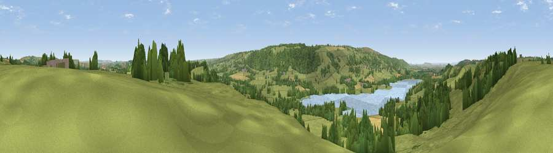

Viewpoint near Nempnett Thrubwell
#11937 in England · top 20% of its area beats it · near Nempnett ThrubwellWhere it is
The exact computed spot (ST 53025 60075). Click the marker for map links.
The view, rendered

A 360° render of this exact spot computed from the terrain model, tree cover and land cover — summer colours, afternoon light, calibrated against photographs of famous viewpoints. Real trees, hedges and buildings will differ in detail.
The panorama
Grey silhouette: terrain skyline in each direction (720 bearings, Earth curvature and refraction included). Dashed green: skyline with trees (+15 m) and buildings (+8 m) as obstacles. Blue strip: how far the ground is visible on each bearing.
Where the view opens
Wedge length = distance to the farthest visible ground on that bearing (vegetation-aware). Rings at 10, 25 and 50 km.
What fills the view
63% grassland · 23% woodland · 8% water · 5% cropland ·
Angular shares of the visible panorama (visual magnitude), not map area. Landscape diversity 0.45 (0–1 Shannon).
Key numbers
More beautiful places nearby
The staircase of upgrades: each row has a higher view potential than everything closer. Driving times are estimates from straight-line distance, calibrated against real road routing — check an actual route before setting out.
| Place | Direction | Drive | Score |
|---|---|---|---|
| Viewpoint near Ubley | SSW · 3 km | ~7 min | 72.2 |
| Viewpoint near Charterhouse | SW · 5 km | ~10 min | 74.0 |
| Beacon Batch | WSW · 5 km | ~12 min | 79.4 |
| Bleadon Hill [Loxton Hill] | W · 17 km | ~29 min | 79.6 |
| Viewpoint near Holford | WSW · 42 km | ~62 min | 80.8 |
| Viewpoint near Holford | WSW · 42 km | ~62 min | 82.2 |
| Viewpoint near Holford | WSW · 43 km | ~63 min | 85.9 |
| Viewpoint near West Quantoxhead | WSW · 44 km | ~64 min | 87.9 |
51.33781, -2.67573 · source: screening · position refined by local search. Computed location — check access rights before visiting.